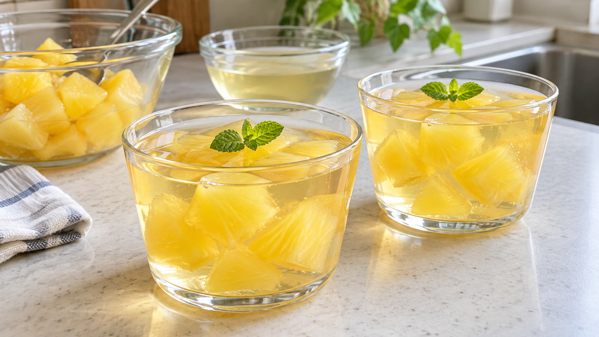

生パイナップルでゼリーが固まりにくい理由｜果実を加熱すると変わること
生のパイナップルをゼリーに入れたら、冷やしてもゆるいまま。冷蔵庫の時間が足りなかったのだろうか。
原因は、果実にある「タンパク質を切る働き」かもしれない。ゼラチンでしっかり固めたいなら、加熱済みのパイナップル缶詰を使うと作りやすい。
冷やしても固まらないのはなぜ？
ゼラチンは、長いタンパク質の鎖が冷えると寄り集まり、水を抱え込んで固まる。生のパイナップルには、その鎖を短く切る酵素がある。これをブロメラインと呼ぶ。網目を作る鎖が切られると、冷やしても固まりにくくなる。
生パイナップル果汁を調べた研究では、果汁をゼラチン液に加えると、鎖の大きさと液の粘りが下がり、果汁の量によっては固まる力が失われた。つまり、単に果汁で薄まっただけでは説明できない変化が起きている。
一方、パイナップル果汁を加熱した研究では、温度と時間に応じて酵素の働きが弱まった。家庭の果肉では大きさや熱の通り方が違うため、少し温めれば必ず止まるとは言えない。そこで、家庭ではすでに加熱処理された缶詰を選ぶと判断しやすい。森永製菓も、生のパイナップルやキウイには煮た果実か缶詰を使うよう案内している。
今日作る、缶詰パイナップルのカップゼリー
約2人分。パイナップル缶詰の果肉80g、缶詰のシロップと水を合わせて250ml、粉ゼラチン5gを用意する。液体とゼラチンの比率は、製菓メーカーが示す硬めのゼリーの目安を参考にした。甘さはシロップの量で変わるので、好みで水との割合を決めてよい。
- 粉ゼラチンを商品の表示どおりにふやかすか、湯に溶かす。ふやかし水や溶かす湯も、上記の液体250mlに含める。
- 残りのシロップと水を加え、ゼラチンが均一になるまで混ぜる。
- 果肉を小さく切ってカップに分け、ゼラチン液を注ぐ。冷蔵庫で十分に冷やし固め、食べる直前まで冷やしておく。
生の果実を使いたい場合は、果肉を十分に煮てから冷まして加える。ただ、加熱が足りないと固まりにくいことがある。初めて作るなら、缶詰を選ぶと手順が簡単だ。
ほかの果物にも使える考え方
同じようにタンパク質を切る酵素は、キウイやパパイヤにもある。大学の教材でも、これらの果物はゼラチンが固まるかどうかを考える例に挙げられている。ゼラチンを使うときは、果物が生か、十分に加熱されたものかを先に確かめよう。
まとめ
冷やす時間を延ばす前に、果物の状態を見直す。生のパイナップルの酵素はゼラチンの鎖を切るが、加熱で働きは弱まる。今日のカップゼリーには、加熱済みの缶詰を使うとよい。